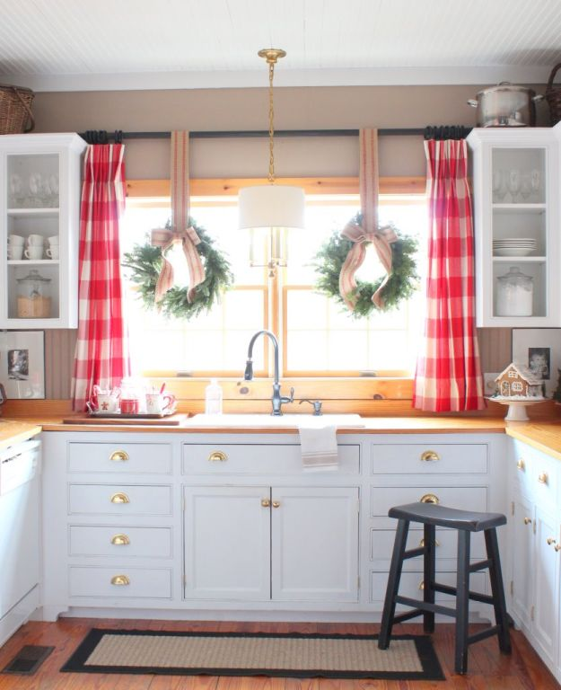

.png)
.PNG)
.PNG)
.PNG)
.PNG)
.PNG)
.JPG)
.JPG)
.PNG)
.PNG)


source
No, it’s not Christmas, but it IS my birthday and our 30th wedding anniversary. 🙂 So I am gifting myself with a post on one of my all time favorites…gingham! Actually, I can’t believe I have not already written a post on this glorious fabric. Gingham…buffalo checks…You choose the one you like. I have adored them since childhood.
.jpg)
When I was 7 years old, my mother made my Easter dress out of a lime green gingham flocked with red cherries. It had puffy sleeves and a long sash to tie in the back. I loved that dress. We went to my grandparent’s home in Alabama that Easter, and I can remember my much older cousin complimenting me on the dress. I was giddy with delight twirling around in that thing!
My childhood bedroom (that I shared with my little sister) was wallpapered in a stripe that alternated ribbons of green gingham with a ribbon of a yellow flower print. Our bedspreads were of the matching green gingham. So it is no wonder that I love checks in every form and fashion.
Obviously they are in pretty much every room here… from the kitchen to the workroom to the family room to my husband’s office and every room in between...the playroom, boys’ bedroom, daughter’s bedroom, children’s bathroom. It’s an addiction folks! But there are many others who love them as well, and today we are just going to sit back and enjoy some checks. 🙂
You can find them in the kitchen…
In the dining room…
And there are many many uses in living rooms!

You can find it in precious nurseries.
And in children’s bedrooms.
And of course grown up bedrooms too. 🙂
It also shows up in bathrooms.
Hotels are even getting in on the use of the fabric!
Now just for some fun, here are some checked items you can purchase for yourself. 🙂
An umbrella…
A blouse (and the chair she is sitting in!)
And of course, everyone needs gingham lingerie. 🙂
(I couldn’t resist this!)
Okay, I’ve got to wrap this up and get to my birthday lunch. My husband started the day with breakfast in bed for me this morning. (Homemade French toast…yum! 🙂 )
Perhaps our lunch will be like this.
just kidding…
And perhaps my birthday cake will be like this…. 🙂
Actually my husband and daughter are currently finishing up some like these from the Back in the Day Bakery cookbook.
(You can find the recipe here.)
I’ll let you know how they turn out. 😉


.PNG)
Happy Birthday, Happy Anniversary, belatedly. I hope you had some extra special celebrating going on. Love all the décor suggestions, they are just so fresh and welcoming. And, I bet that Easter dress was adorable.
Congratulations on your wedding anniversary. But many many years are celebrated together. A hug. Loraine.
Hi Kelly! Happy Birthday and Anniversary! What fun to see all of your beautiful gingham images – LOVE, love, love gingham! In fact, I was pleasantly surprised to see the checked chairs in my dining room included in your post! So fun! Unfortunately, your attribution goes to another site (when I guest posted there)…would you mind linking back to my site when you attribute the source instead? My image is the one decked out for Christmas with the giant chalk board and the brown and white checked upholstered dining chairs. Here’s the link: http://www.lilacsandlonghorns.com/christmas-dining-room.html Thanks so much!
Love your blog and your home, Kelly! 🙂
Happy Birthday and anniversary! And this post with its cheerful gingham theme is adorable.
I don’t know if you’ve discovered this pretty blog, but you would probably love the checks! http://www.theendearinghome.com/home-tour/
I just stumbled onto your site via Pinterest. I was going to start pinning, and then I realized I would just have to pin everything! I am in love. I can’t wait to explore your little corner of the web.
Happy celebrations!
Happy Birthday and Happy Anniversary Kelly! I feel like your blog is a gift to ME!! It’s my absolute favorite! I love gingham too and want to get some chair covers for my breakfast area in that large, khaki buffalo check. I’m in your neck of the woods and can’t wait for our Home Goods to open! Thinking of you today….I’m heading down to the Swanson House for lunch with a friend and then picking up a custom order from Two of a Kind Art…have you seen her work/shop yet? Have a great weekend! 🙂
Happy Birthday to you! Happy Anniversary to both of you! Enjoy!
Happy Birthday and Happy Anniversary! Enjoy this year because you don’t have to go back to school and a new chapter is starting for you. Where do you find your buffalo check fabric? I want to make new curtains and use some for trimming.
I, too, am a lover of all things checked. I have them spread throughout my home, and I never tire of them. Red and black are my favorites, I think. I live in Alabama. Where do/did your grandparents live? Happy Birthday and Happy Anniversary!
Hi Kelly, Hope you had a wonderful day celebrating your birthday and anniversary! Thank you so much for including our family room in this post. I LOVE all things gingham/buffalo check too and why your beautiful home will always be one of my favorites!
Well, Happy Belated Birthday! I hope your day was blessed with beauty! This was a delightful post. I love gingham as well. My curtains and sheets as a child were patchwork gingham, dots, and floral designs in pastel colors. I loved them so much! I look for them when I am out thrifting and hope to find one someday! I collect vintage sheets and pillowcases and love the soft, worn feel they have. I plan to make a quilt with one day. Anywho, I thoroughly enjoyed this post. Hope the cupcakes were yummy!
Blessings, Vicky
Happy birthday/anniversary!! Love gingham, too. As I have said before, you and I have a lot (if not all) interests that are the same! Hope you are not missing the dreaded go back to school and work for days getting your room ready! Enjoy your free time…you are now officially retired!
Happy Belated Birthday and Happy Anniversary!!! Hope you had a wonderful day. Isn’t it funny how a very special dress as a child can bring back so many wonderful memories? Those cupcakes from Back in the Day Bakery are to DIE for! Enjoy each and every bite.
Hey there and HAPPY BIRTHDAY to my FAVORITE blogger!!! Happy Anniversary too! I LOVE this post. As always I love your blog, it always has been my favorite. Have a wonderful day filled with lots of love!! Hugs to you.
Happy Birthday and Happy Anniversary! Here’s to another great year!
Happy 30th Anniversary and Happy 30th (wink) Birthday, Kelly! The checks remind me of curtains I made at different times in my life in different locations as an Army wife. Back in the day when we didn’t know whether an expected baby would be a boy or a girl, I made tiny yellow and white checked curtains for the nursery in Fort Lee, Virginia ~ and after my daughter was born, I sewed a lace edge on the front of them. Later on, we lived in vintage base quarters in Schofield Barracks, Hawaii and I had red counter tops in my over-sized kitchen. I made big red buffalo check curtains for the 4 windows and they made the big room seem cozier. I no longer move around and I’m no longer sewing curtains so the checks brought back a lot of memories! Thanks for those!
A Happy Happy Day, month, year, and life to you. I know you have loads of family and friends who love you and probably treated you like a queen. That breakfast looked pretty good. My B Day is on the 14th so it is nice to share this special time with a very talented and special person.
Thanks for introducing me to Buffalo checks. Always liked gingham, but these checks are addicting. Especially like the red.
Blessings to you, Kelly.
Happy birthday and anniversary, Kelly!
I hope your day went just as you planned. I love your obsession of gingham. Thanks for sharing it with us. Take care.
Dawn
Sending a birthday wish of good health and much happiness and an anniversary wish of many more years together!
Kelly,
I love this post. I will be pinning and saving these images to my “absolutely favorite rooms”. Checks are so warm and welcoming…they are wonderful. Thank you for this. I believe there are several rooms I’ve never seen before.
xo,
Karen
I LOVE the checks! I don’t have any of the big buffalo checks but I think they are now on my “to get” list. I love the long drapes in your family room! My laundry room has blue and white gingham wallpaper and my guest bath has navy and white gingham curtains. One guest room has black and white toile and black and white gingham, mixed. And, I just bought some red and white gingham basket liners at Pottery Barn Outlet. I am so glad you did this post. I think my love for gingham is also rooted in childhood. Happy Birthday and Happy Anniversary! (What were you thinking, gf, spread those gifts out!)
Love ,love ,love this post. We must be separated at birth . It was our 30th this year too and I have had long love affair with gingham/buffalo check(drapes in our family room right now !
Great blog !
Happy-happy and more HAPPY TO YOU!
Happy Birthday and Anniversary, Kelly. I know you had a magnificent day! I loved all of the gingham pics. I hope to one day add some buffalo checked curtains to our den.
Love all the gingham!!! I had yellow and white gingham curtains in my first nursery 42 years ago and my mother found a lovely yellow gingham quilt for the twin bed I had in the room. Thus began my love of all things gingham. I put green and white gingham wall paper in my kitchen when we built our house 38 years ago, I still have a small bit of it in my laundry room and it makes me happy.I love all the pictures in this post, especially the blue gingham ceiling and all the black and white wing chairs…..oh my,what a wonderful post. Thanks!!
Great post. Happy Birthday & Happy Anniversary
I almost couldn’t believe this post! The topic of conversation all weekend between my daughter and I has been her dilemma in hanging curtains in her living room. I was voting for taupe buffalo check and she was hedging. Well, as moms do when their daughters are having decorating dilemmas (and work full time and have two little kids) I spent all of yesterday after church in Asheville buying different 96 inch length taupe curtains being careful to save all my receipts. After looking through my purchases she decided they were all misses and she just needed to order buffalo check curtains. Now can you believe that buffalo check curtains are all on back order at Ballards and Country Curtains. She finally decided to go with the ones at Country Curtains. In the grand scheme of things, curtains are NOT that big of an issue But goodness she and I spent a lot of time debating the subject this weekend…. Ha ha!
Happy Birthday, my Leo sister! Mine was Saturday. Looks like you are off to a good start with breakfast in bed. I am partial to checks, too, don’t have nearly as many as I would like. I hope you have as wonderful a birthday as I did.
Happy Birthday…and Happy Anniversary! Wow…a two-fer! I love this post…and now I’m asking myself, why I don’t have any buffalo checks in my home? I do have a navy flannel shirt…at least it’s a start. Hope your day is just as you’d hoped! 😉
Lovely post. And, your emphasis and love for gingham has awakened an appreciation for them in me that I didn’t realize that I had. It brings back many memories of a different generation and a different and slower way of life. Happy Birthday to you and Happy Anniversary to you and your husband!
Happiest of birthdays to you Kelly!
LOVE gingham ~ My girls’ nursery and little girl room was yellow gingham, and I’ve had it in some form ever since. Currently I have 2 black buffalo check chairs, the curtains in my family room, and several pillows. I think it will be prominent in our lake home too. Just love checks!
{and happy anniversary too!}
Inspired mainly by you, I have put red Buffalo check curtains in my family room. My son-in-law said it looks “cozy”. This was a great post.
What a fun post! Who doesn’t love gingham? 🙂 I used to have my fair share of blue. Well, I remember a green valance too. 😉 I always imagine red gingham in my adult son’s room one day when it becomes a “grandchildren’s room.” The room is painted red so the task of painting over it sounds too daunting. 🙂 I hope you are having the most wonderful birthday and anniversary!! I’m sure knowing you don’t have to return to school is the icing on the cake!! 😉 😀
first time i am posting but it was irresistible, loving gingham like i do i love your blog and your home is just beautiful i have stolen so many cute ideas from you like the jars and table decor and so on, and i hope to go right on doing what you’re doing just wanted to make sure you knew about sabre flatware, so cute it comes in so many patterns and they make the most adorable and sturdy gingham flatware i have it in red and blue it’s kind of expensive, but you use it 3 times a day and it makes me happy to see it belated thanks for all your inspiration, and enjoy your retirement! ❤
I agree with Linda-what a lovely post! And wow on the breakfast! Happy Anniversary and Birthday Kelly.
Happy Birthday and Happy Anniversary! Love gingham- don’t know which of your beautiful images to pin first! For me, it all started with The Ginghams paper dolls- they had such pretty clothes. Enjoy your cupcakes!
Kelly, happy birthday and happy anniversary! I hope you have fun celebrating both of these joyous occasions! Love the buffalo check…especially the red ones in the cabin type setting and the neutral ones in the dining room…dining room envy for sure! I have red, green, and baby blue checked shirts that I just love and wear often. Gingham and seersucker were a big part of my childhood as well.
Happy Birthday Kelly! After all your own home tours, this has to be one of my most favorite posts of yours since I also have a love of gingham. My childhood bedroom had a wallpaper that was royal blue, orange, and gold gingham ribbon that looked like it was woven together like plaid. It sounds pretty hideous, but it coordinated perfectly with my Raggedy Ann curtains that also had patches of gingham in the print. LOL! When we were little girls, my sister and I had matching gingham nightgown and robe sets….hers blue, mine red. I loved those and I loved matching my big sister. And I’m currently looking for just the right black and white gingham to re-cover a rocking chair we recently “inherited” from my in-laws.
Happy Birthday and Anniversary! I love gingham! Blue and white is my favorite, but I love it all. Often, when I see a photo of a room I like, I realize that a big part of what I like about it is something gingham, such as curtains or a slipcover. Your childhood bedroom sounds so lovely and delightful. (Do you have any photos of it?)I really need more gingham in my home. I am adding some new curtains in my kitchen. The print is blue and white gingham and red cherries. So cheerful.
Happy Kelly Day and Happy Anniverary! I just love all kinds of checks too. I am always drawn to them. Currently, I seem to prefer buffalo checks in any color.
Happy Birthday and Happy Anniversary! Oh my…I loved this post. I adore gingham too. Every single picture —yours and the ones you found are spectacular.
I love them as well Kelly. If our cabin in Georgia becomes a reality, I will be using them there. I plan to see what Country Curtains has available as I have used their curtains before and I liked them. Happy Birthday and Happy Anniversary!!
Happy Birthday! and Happy Anniversary! Really enjoyed all of the gingham too. Some good ideas in there 🙂
Happy Birthday and Anniversary!! I hope you have a fabulous day.
I love gingham.
You gave us, your readers, a gift on your special day of days!! Happy happy everything to you! Breakfast in bed, oh my!! Wasn’t that better than bus duty on the first day of school? You have one special hubby!! Loved the gingham — all sizes!! My mother used to do smocking using gingham and made lovely items. I loved the blue adult bedroom– so beautiful and tranquil— aww—. And now I am wanting homemade cupcakes!! So off I go to whip up some!! Have a wonderful day and welcome to the real first week of your retirement!! How does it feel? Good? But different? Strange? But nice! All those things which will take some getting used to!! May God bless you with the best of health really soon!:)
Happy Birthday, Kelly, and congratulations on your 30th anniversary. And home made cupcakes….they look beautiful!
Love the gingham post. I remember wearing lots gingham in my youth and a favourite was a cropped baby doll blouse made of pink and white gingham – it would have been early 70s, grade 11 🙂
Enjoy your day!
Happy Birthday and Anniversary to a special (blog) friend and a sweet lady! Enjoy your day. Love the gingham, you have renewed my interest. It was once so country, now it looks traditional.
Cindy
Happy Anniversary and many birthday wishes!! Thank you for all of your great posts. Have a wonderful day!!
Happy Birthday and Anniversary. ♥
Enjoy the special treatment and thanks for the wonderful inspiration.
Happy, happy day!
And you spent part of it podting. Thank you.
Now go enjoy your day!
PS your husband is a keeper
Wishing you a very happy, happy birthday. Love your blog and especially all the checks. My grandmother made me a purple and white gingham apron years ago. After receiving it, I wore it for 3 days straight! Just loved that apron. She used gingham several times and would cross-stitch in the white spaces using thread a few shades darker of the color. Her curtains were so sweet. Everytime she sat down, she would have some type of needle work in her hands.
Happy Birthday and Happy Anniversary!….love this post!!
Happiest Birthday and Anniversary wishes, Kelly! Soooo many special things to celebrate today! 🙂
I’m a gingham girl, too! Aren’t they just the cheeriest fabric patterns of all? I love gingham in any color… but I think red will always be my favorite! It’s practically perfect in every way! ♡
Happy birthday! Happy Anniversary! Blessings for many, many, many more! Oh my! I opened this right before I was to go get my grandson to watch this afternoon and I could be in some serious trouble. I will be thinking about this check deliciousness all afternoon. Hoping there is some time after bedtime for Grandom to sneak a few more peeks. Candy for the eyes!
Happy Birthday and Anniversary, this has got to be one of my favorite posts. So lovely.